↻ Reposted from Joerg Osterrieder
Professor of Finance and Artificial Intelligence
Thanks
for this great initiative!
Maria Iannario
COST Fintech and Artificial Intelligence in Finance MSCA Digital Finance Management & Marketing Journal
📊 Digital Datathon – From Data to Insight
Exploring Economic, Structural, and Social Indicators through DataSphere
We are excited to announce the Digital Datathon: From Data to Insight, an international data challenge bringing together students interested in data
analytics, economics, and social impact.
Participants will work with DataSphere, a comprehensive database of economic, structural, and social indicators, to develop innovative analyses and
propose data-driven insights for complex socio-economic systems.
Content truncated in source
↻ Reposted from MSCA Digital Finance
We are excited to launch a new blog series connected to Work Package 3 (WP3) of the MSCA DIGITAL Doctoral Network.
A More Complex Financial Modeling Landscape: The Need for Explainability
responsibleaiinfinance.substack.com
Content truncated in source
We are excited to launch a new blog series connected to Work Package 3 (WP3) of the MSCA DIGITAL Doctoral Network.
A More Complex Financial Modeling Landscape: The Need for Explainability
responsibleaiinfinance.substack.com
Content truncated in source
𝐖𝐡𝐲 𝐃𝐨 𝐅𝐢𝐧𝐚𝐧𝐜𝐢𝐚𝐥 𝐀𝐈 𝐌𝐨𝐝𝐞𝐥𝐬 𝐍𝐞𝐞𝐝 𝐄𝐱𝐩𝐥𝐚𝐢𝐧𝐚𝐛𝐢𝐥𝐢𝐭𝐲?
Financial institutions are increasingly using advanced AI models to support critical decisions. These models can uncover complex patterns in financial
A More Complex Financial Modeling Landscape: The Need for Explainability
responsibleaiinfinance.substack.com
Content truncated in source
𝐖𝐡𝐚𝐭’𝐬 𝐖𝐫𝐨𝐧𝐠 𝐰𝐢𝐭𝐡 𝐏𝐨𝐬𝐭-𝐡𝐨𝐜 𝐗𝐀𝐈 𝐢𝐧 𝐋𝐨𝐚𝐧 𝐀𝐩𝐩𝐫𝐨𝐯𝐚𝐥 𝐒𝐲𝐬𝐭𝐞𝐦𝐬?
Access to credit is more than a financial transaction: it’s access to opportunity.
What's Wrong with Post-hoc XAI Methods for Loan Approval Systems?
responsibleaiinfinance.substack.com
Content truncated in source
Yesterday we had another session of the Research Seminar Series on
for
within our MSCA Digital Finance Action.
#ExplainableAI
#Finance
We featured a talk by
- a MSc student in Financial Engineering & Management at the University of Twente. The talk explored how
Justus Straus
#ExplainableAI#Finance
Content truncated in source
↻ Reposted from Monica Violeta Achim
Professor at Babes-Bolyai University
DIGITAL Datathon 2026 – Kick-off Event | February 11
We are excited to launch the DIGITAL Datathon 2026 with the official kick-off event on February 11 at the University of Naples Federico II.
+1
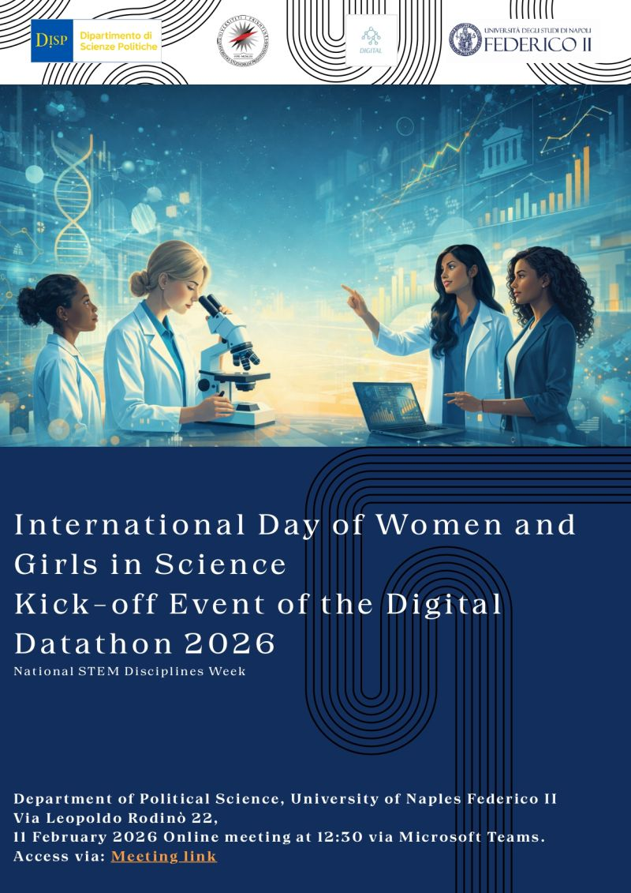
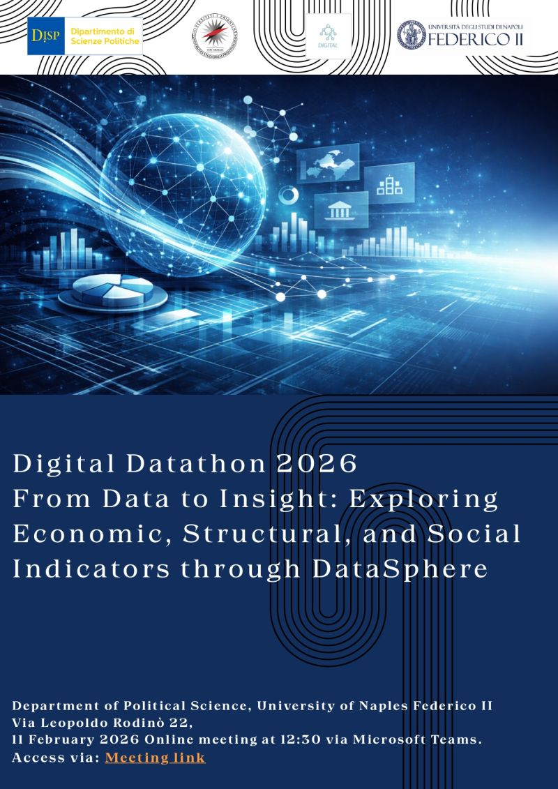
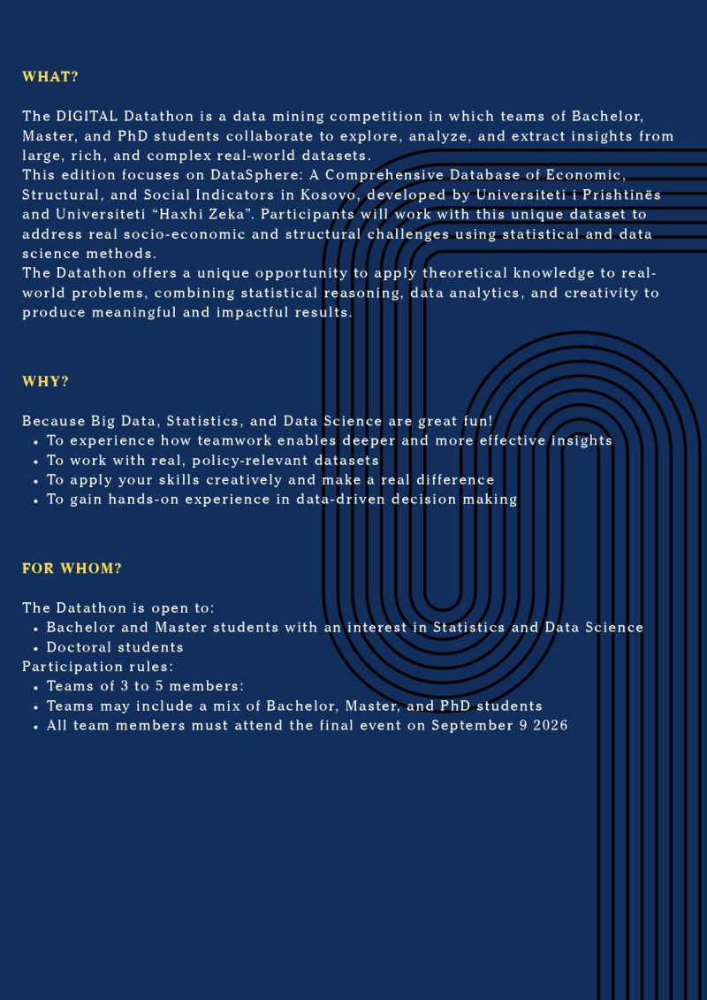
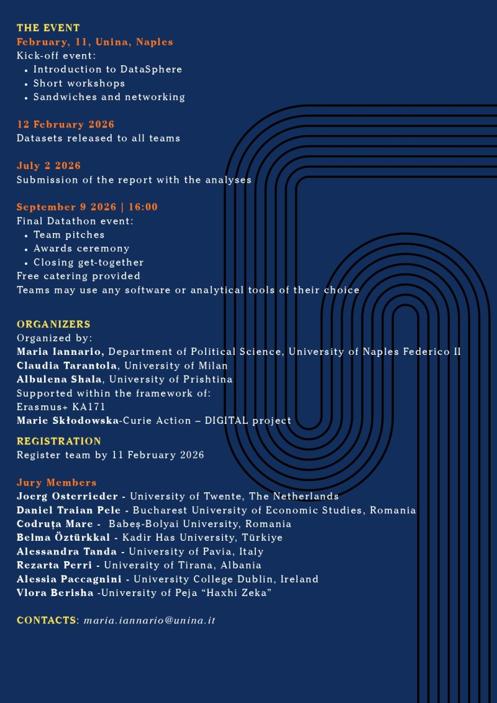
Content truncated in source
↻ Reposted from Monica Violeta Achim
Professor at Babes-Bolyai University
I am thrilled to share the Springer' news that our book titled Financial Crime in the Digital Era is now upcoming. The book metadata is now visible on
the Springerlink website at:
.
https://lnkd.in/dVYpxKiN


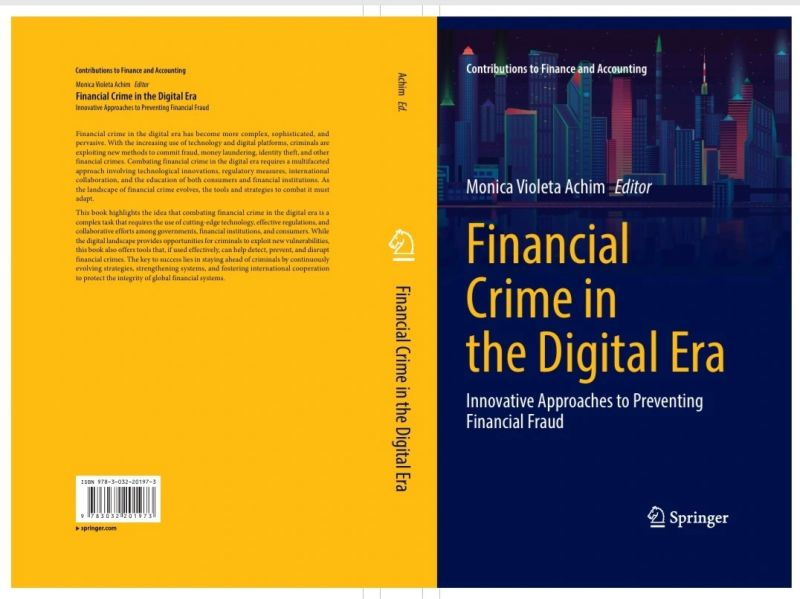
Content truncated in source
↻ Reposted from Maria Iannario
Professore universitario presso Università di Napoli Federico II
The "Practice of Digital Finance – Research Workshop" has successfully concluded!
Hosted by the
(ASE), this two-day event provided a collaborative platform for doctoral researchers to
The Bucharest University of Economic Studies
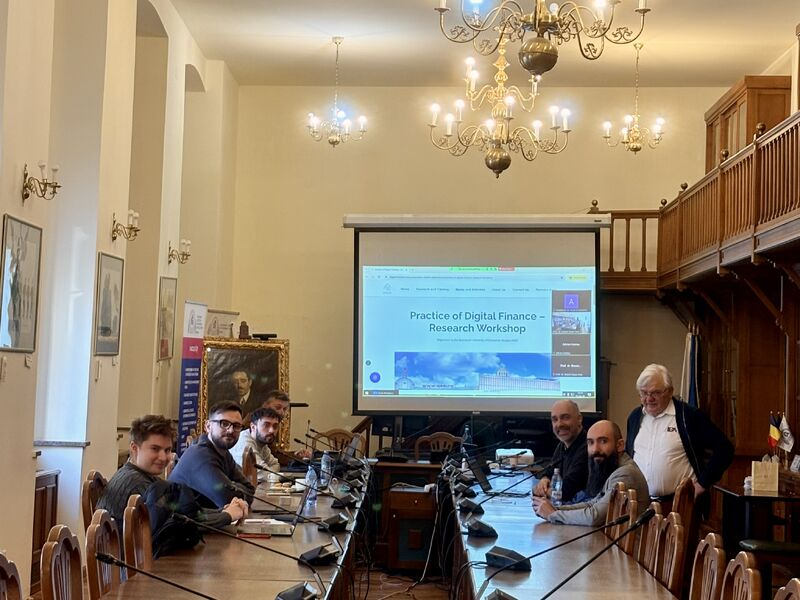
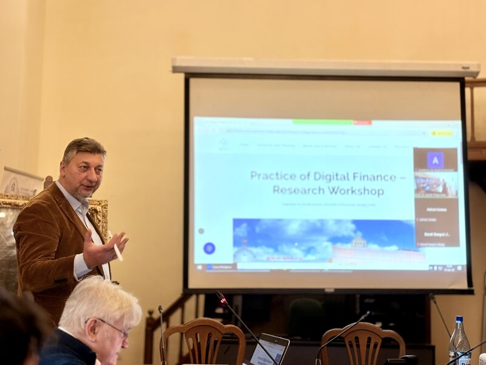
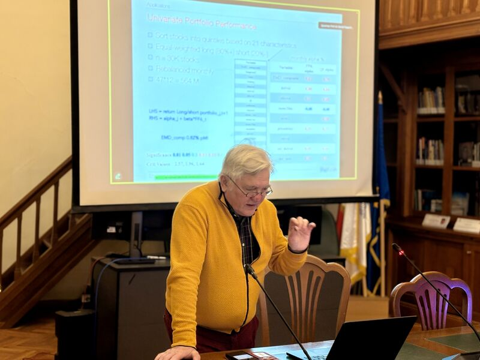
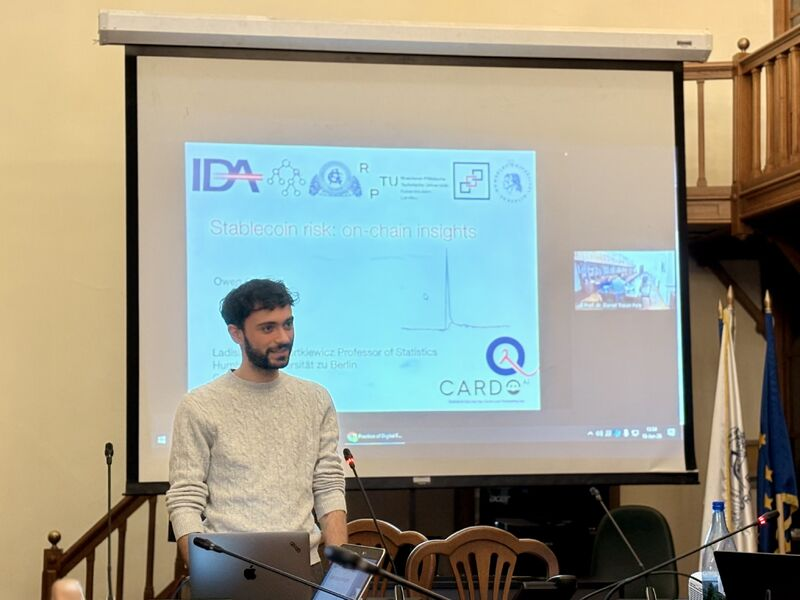
Content truncated in source
↻ Reposted from Maria Iannario
Professore universitario presso Università di Napoli Federico II
🌐 Digital Training Week 2025 – Environmental Aspects & History and Prospects of Digital Finance
📅 December 9–12, 2025
📍 University of Naples Federico II – Department of Political Sciences
Content truncated in source
↻ Reposted from Frederik Sinan BERNARD
Researcher - Consultant - Lecturer
Back home in Paris to attend
!
Adopt AI - Grand Palais
is not only aiming to bring together great researchers, conscious of the main challenges and active in their field ; but also
Content truncated in source
We are pleased to announce the seminar:
“Violence Against Women: Analytical Perspectives and Methodological Challenges in Measuring a Hidden Phenomenon Through ISTAT Data”
Content truncated in source
Dear Colleagues,
We're organizing an international ECMI conference in Kaunas, 29 June - 3 July 2026. Please use this opportunity to visit us :) Join our LinkedIn event to
Audrius Kabašinskas
Professor of Mathematics, Council Member at ECMI: European Consortium for Mathematics in Industry
Mon, Jun 29, 7:00 AM - Fri, Jul 3, 5:00 PM CEST
23rd ECMI Conference on Industrial and Applied Mathematics
Kaunas, LT
Content truncated in source
↻ Reposted from Mathis Jander
Doctoral Candidate in Reinforcement Learning for Digital Finance @ University of Twente | European Central Bank
Hi Everyone,
our Systematic Literature Review on Reinforcement Learning in Finance is now available as pre-print on SSRN:
Reinforcement Learning in Finance: From Current Practice to Standards and Frameworks
papers.ssrn.com
Content truncated in source
Is Romania becoming a hub for blockchain and new technologies?
The international conference Blockchain Applications in Finance – Training Week, which brings together top experts in blockchain, DeFi and crypto,
takes place at The Bucharest University of Economic Studies
Content truncated in source
Join us for the Autumn series of the WP1 research seminars!
🗣On Monday, 10 November, at 10:30 CET (11:30 EEST), IRP6 PhD student @Karolina Weyna will present her research objectives and plans.
Join our Cloud HD Video Meeting
econ-ubbcluj-ro.zoom.us
Content truncated in source
🔔 Reminder - MSCA DIGITAL Training Week: Introduction to Blockchain Applications in Finance
📅 3-7, November 2025
Introduction to Blockchain Applications in Finance - Training Week | Digital Finance MSCA
digital-finance-msca.com
Content truncated in source
Seminar Invitation: Designing Green AI Models for Finance
We are pleased to invite you to an online seminar by Ismail Elbouknify on “Designing Green AI Models for Finance”, within the activities of WP5 –
Content truncated in source
Congratulations to our PhD candidates of
-
UBB FSEGA | Faculty of Economics and Business Administration Adrian Bojan Tomina Manci Beatrice-
- for your involvement in this great event that belongs to
!👏👏👏
Larisa Dumnici
📍 Bern, Switzerland 🗓️ October 6–10
💡 It is a valuable opportunity to learn from top experts, collaborate with PhD students from around the world, and contribute to advancing research
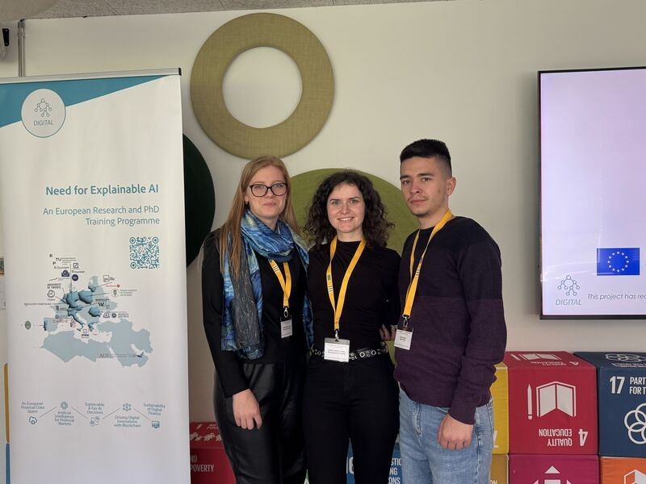
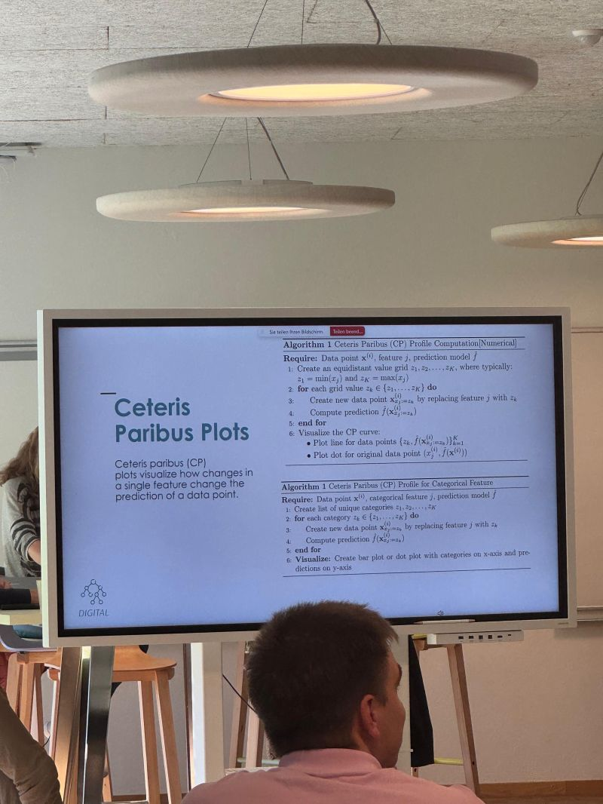
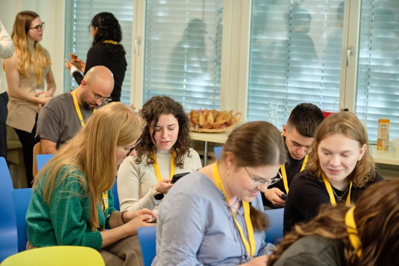
Content truncated in source
https://lnkd.in/efAz86Uh
Last week, we, at
were thrilled to host the Industry Session “AI in Action” within the
Training Week on
BFH Wirtschaft
Explainable AI. This session within a week-long event was key as it brought together leading experts from industry to share their experiences applying
AI responsibly and effectively.
+8
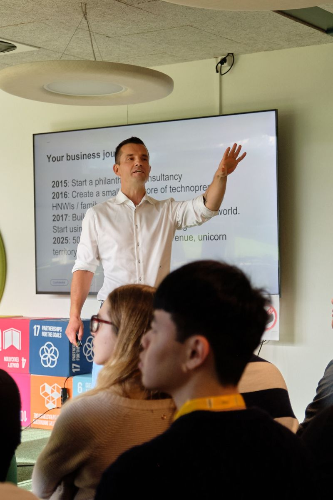
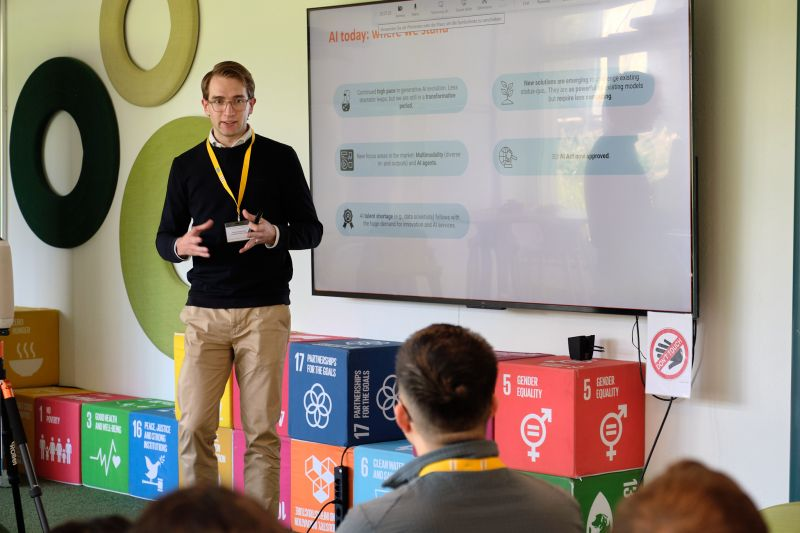
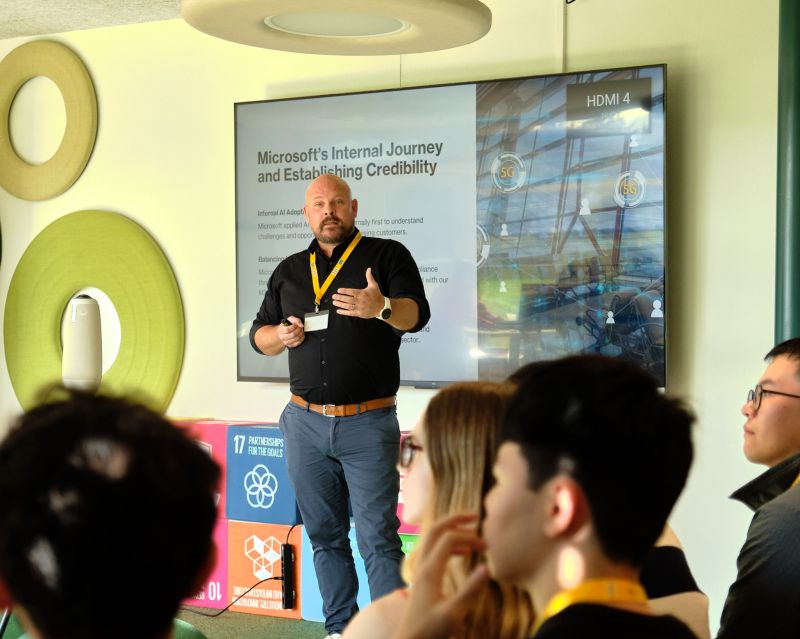

Content truncated in source
🗣We are inviting you to the Autumn series of the WP1 research seminars.
🧭On Monday, 13 October, starting at 10:30 CET (11:30 EEST), IRP13 PhD student
will present his latest research, continuing a line of
Fulvio Raddi
Content truncated in source
↻ Reposted from MSCA Digital Finance
MSCA DIGITAL Training Week on eXplainable Artificial Intelligence
📅 Monday, October 6th
Explainable AI - Training Week | Digital Finance MSCA
digital-finance-msca.com
Content truncated in source
↻ Reposted from MSCA Digital Finance
📢 Excited to announce the upcoming talk:
"From Representation to Transformation: A Technical Perspective on Diversity in the DIGITAL Project"
Maria Iannario
Content truncated in source
↻ Reposted from MSCA Digital Finance
📢 Excited to announce the upcoming talk:
"From Representation to Transformation: A Technical Perspective on Diversity in the DIGITAL Project"
Maria Iannario
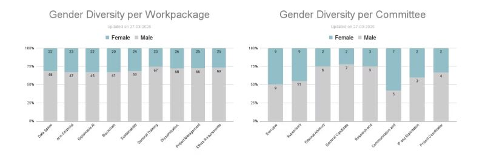
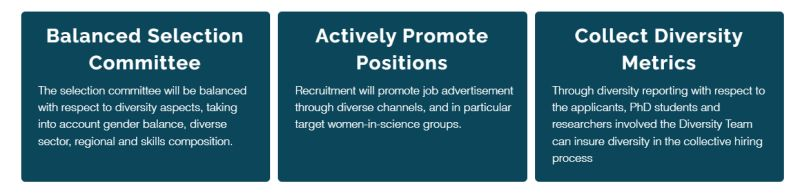
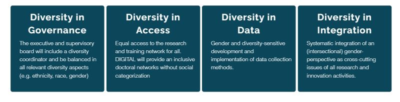
Content truncated in source
↻ Reposted from MSCA Digital Finance
Great discussions today at the MSCA Digital research seminar on
the
under tracking error constraints.
#Decarbonizing
#SP500
presented her research on sector-level portfolio optimization, exploring the balance between carbon reduction, risk, and
Rebecca Di Francesco
#Decarbonizing#SP500
Content truncated in source
Great discussions today at the MSCA Digital research seminar on
the
under tracking error constraints.
#Decarbonizing
#SP500
presented her research on sector-level portfolio optimization, exploring the balance between carbon reduction, risk, and
Rebecca Di Francesco
#Decarbonizing#SP500
Content truncated in source
MSCA digital finance training week on Green Digital Finance in Kaunas Lithuania
All this week (30 June–04 July 2025), doctoral candidates have spent at Kaunas University of Technology and had training on two topics Green Digital
+2
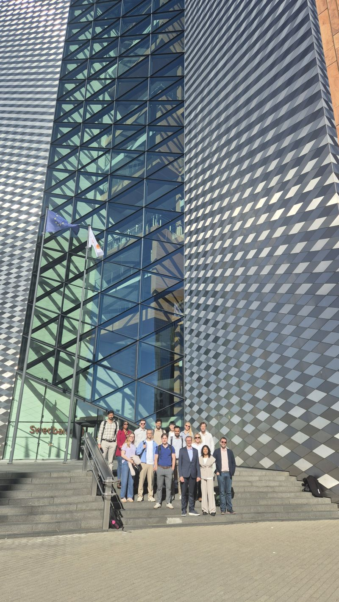
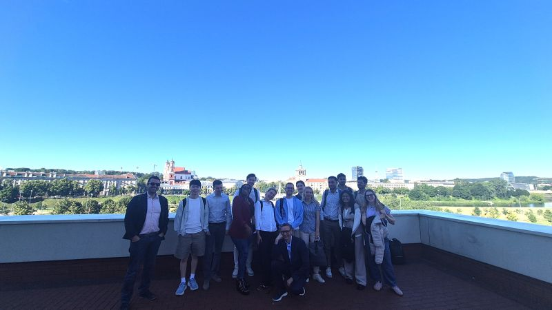
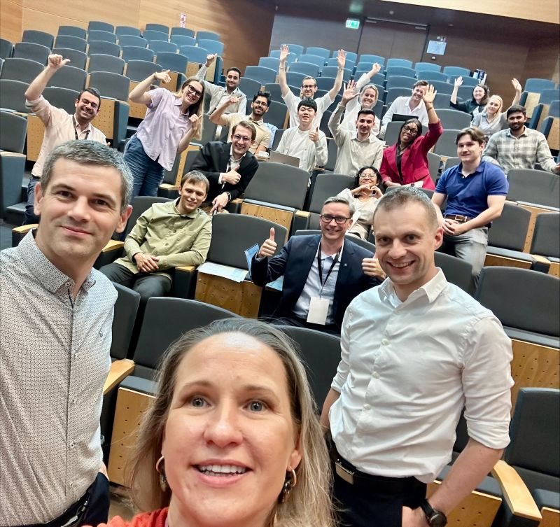
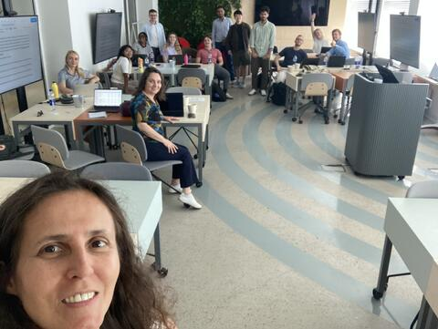
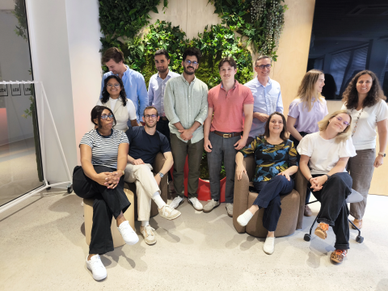
Content truncated in source
📢 Upcoming Research Seminar | Uncertainty-Aware Statistical Learning for Complex Decision Processes (WP5)
Date: 11 June 2025
Content truncated in source
🔍 Why do AI models make the predictions they do when it comes to financial time series?
In his recent presentation at
, PhD candidate
explored this question by examining the limits of current explainable AI (XAI)
BFH Wirtschaft
Jens Reil
Content truncated in source
Day 5 wrapped up our week on the perfect note. A focused morning with Dr.
and Dr.
put ethics at the heart of
Robin Effing
Catarina Simões da Silva
everything we do in digital finance, sparking thoughtful discussion and plenty of actionable ideas.
Content truncated in source
It is a pleasure to be part of this:)
Grateful and Honored to be part of it!
As part of the ongoing event, today, we are going into the foundational aspects of Digital Finance, exploring key topics that are shaping the future of
the sector.
Content truncated in source
Day 1 of our latest event, we’re kicking off in Enschede! ☕
Today, our MSCA Research Day brings the whole consortium together to shape where we take digital finance next. Join us at the University of
Fill | MSCA TRAINING - Reinforcement Learning @UTW
forms.office.com
Content truncated in source
🚀 Excited to announce our upcoming MSCA MidTerm Meeting and Technical Training Week, taking place from May 19th to May 23rd, at
the
!
University of Twente
Content truncated in source
hi this is an interesting talk. Work together with Chen HUANG and Kainat Khowaja
Über den Wolken gibt es keinen Regen
hi there, Generalised Random Forests this wednesday.
The last two days of the conference (April 3rd and 4th)
at
UBB FSEGA | Faculty of Economics and Business Administration
have been dedicated to the presentation of the project management in Research (
and
), Status report on the
Codruta Mare
Monica Violeta Achim
financial data space (
,
) and, in the end, the Final Showcase Presentations (All teachers, guest speakers).
Codruta Mare Stanca Liana
+3
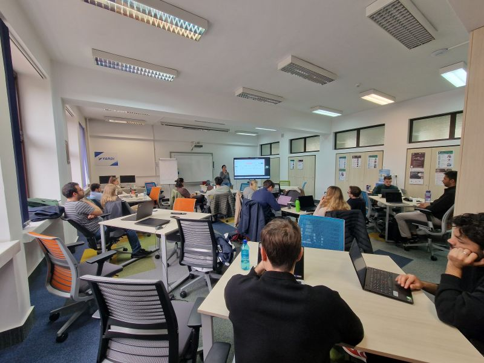
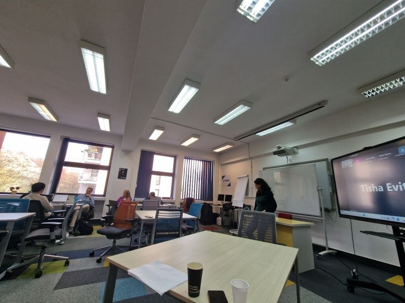
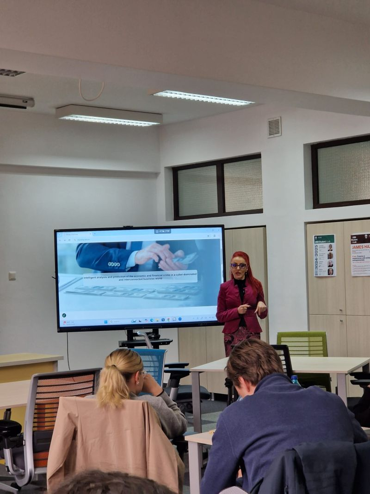
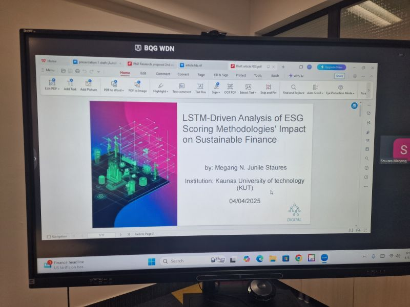
Content truncated in source
Thank you Vasile
, Cata
and Vladut
, along with your team for always being open towards our
Vasile Anton
Catalin Crisan-Natia
Vlăduț-Vasile Sima
initiatives and invitations! You provided a very interesting perspective into data & data science in banking!
Vasile Anton
Data Science Leader in Banking | Building High-Performance Analytics Teams | Turning Complex Data into Clear Business Decisions
Honored to be a speaker at the MSCA Digital Finance - European Industrial Doctoral Network!
It was a pleasure to be part of the doctoral training course "Foundations of Data Science (4 ECTS) and Project Management (1 ECTS)" at UBB FSEGA |
Faculty of Economics and Business Administration (March 31 - April 4, 2025).
Together with my colleague, we had the opportunity to share the methodologies we use in our work, exchange ideas, and engage in constructive
discussions with a group of talented and motivated students.
Their curiosity and interest in the field of data science in banking were truly inspiring!
Content truncated in source
🕛 The third day of the conference (April 2nd)
hosting the doctoral training course "Foundations of Data Science (4 ECTS) and
Project Management (1 ECTS) at the
(31st of March to April 4th 2025)
UBB FSEGA | Faculty of Economics and Business Administration
+9
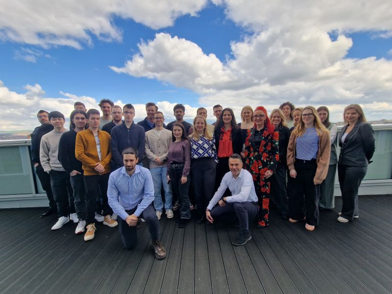
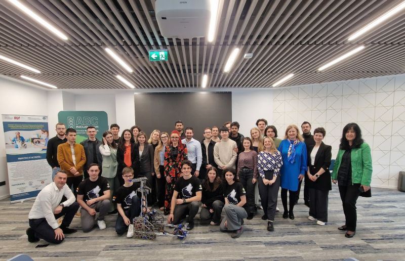
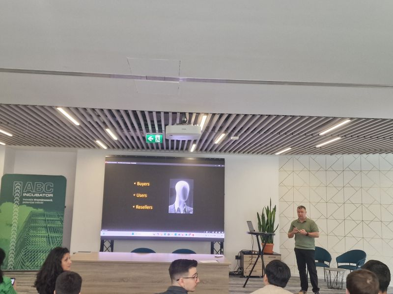
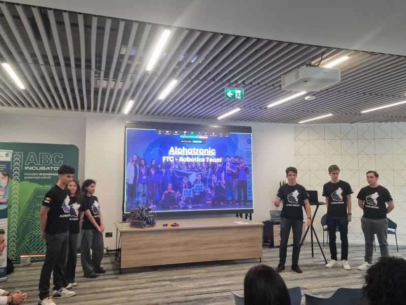
Content truncated in source
↻ Reposted from Codruta Mare
Professor at the Dep. of Statistics-Forecasts-Mathematics, Faculty of Economics and Business Administration and Scientific Director of the Interdisciplinary Centre for Data Science, l
🕛 The second day of the conference (April 1st)
hosting the doctoral training course "Foundations of Data Science (4 ECTS) and
Project Management (1 ECTS) at the
(31st of March to April 4th 2025)
UBB FSEGA | Faculty of Economics and Business Administration
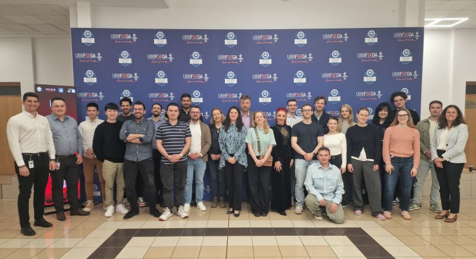
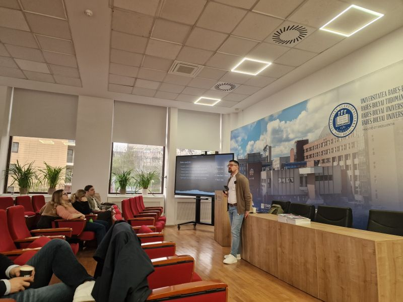
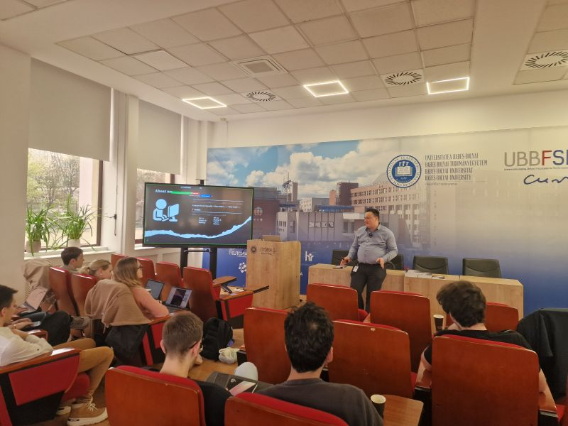
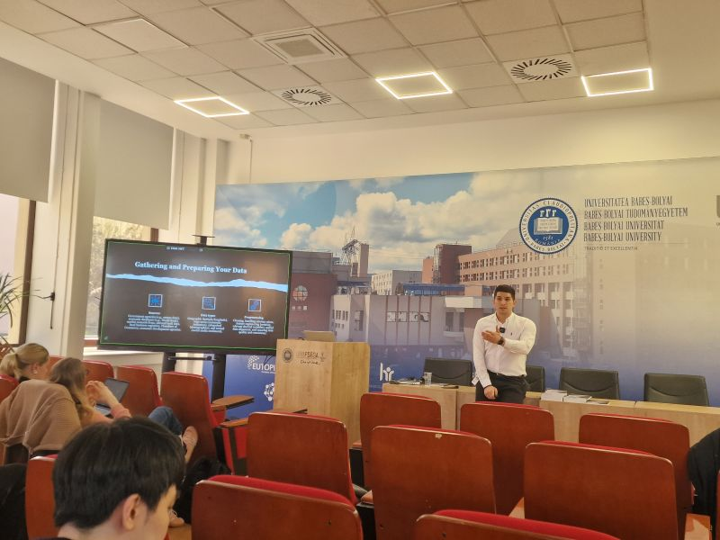
Content truncated in source
↻ Reposted from Codruta Mare
Professor at the Dep. of Statistics-Forecasts-Mathematics, Faculty of Economics and Business Administration and Scientific Director of the Interdisciplinary Centre for Data Science, l
This will be an amazing 3rd day for our training school!!! We are waiting for you with a lot of interesting insights into Data Science and Project
Management in the Business sector!
💡Looking forward to the third day of MSCA BBU training (April 2nd, 2025) when an Exciting Event Announcement is waiting for you.
🕛 Engaging Talks by Industry Experts:
(General Manager, ABC Incubator),
(Data, Analytics & AI Service Manager
Calin Sahleanu
Maria Irimias
MSCA TRAINING - Data Science @BBU | Digital Finance MSCA , Mon, Mar 31, 2025, 9:00 AM | Meetup
meetup.com
Content truncated in source
🕛 The first day of the conference (March 31st)
hosting the doctoral training course "Foundations of Data Science (4 ECTS) and
Project Management (1 ECTS) at the
(31st of March to April 4th 2025)
UBB FSEGA | Faculty of Economics and Business Administration

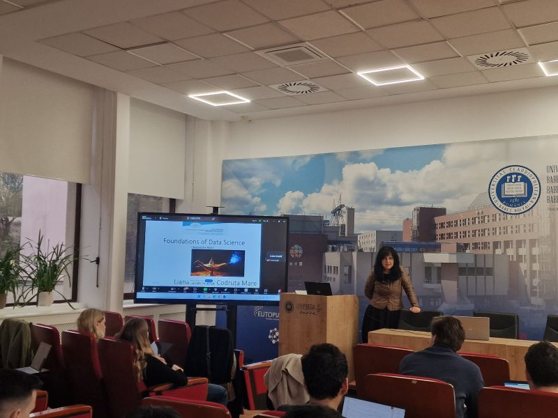
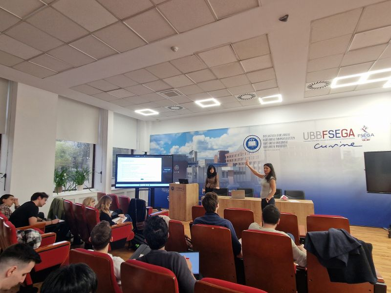
Content truncated in source
🕛 The first day of the conference (March 31st)
hosting the doctoral training course "Foundations of Data Science (4 ECTS) and
Project Management (1 ECTS) at the
(31st of March to April 4th 2025)
UBB FSEGA | Faculty of Economics and Business Administration
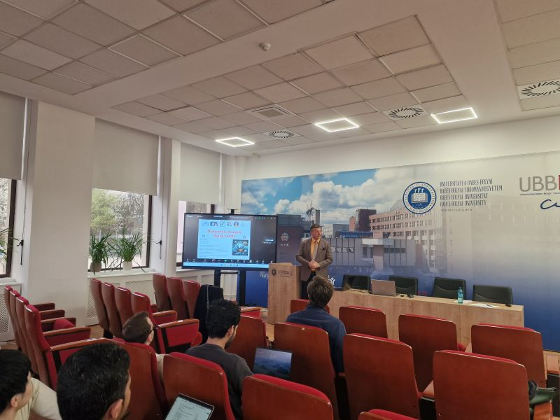
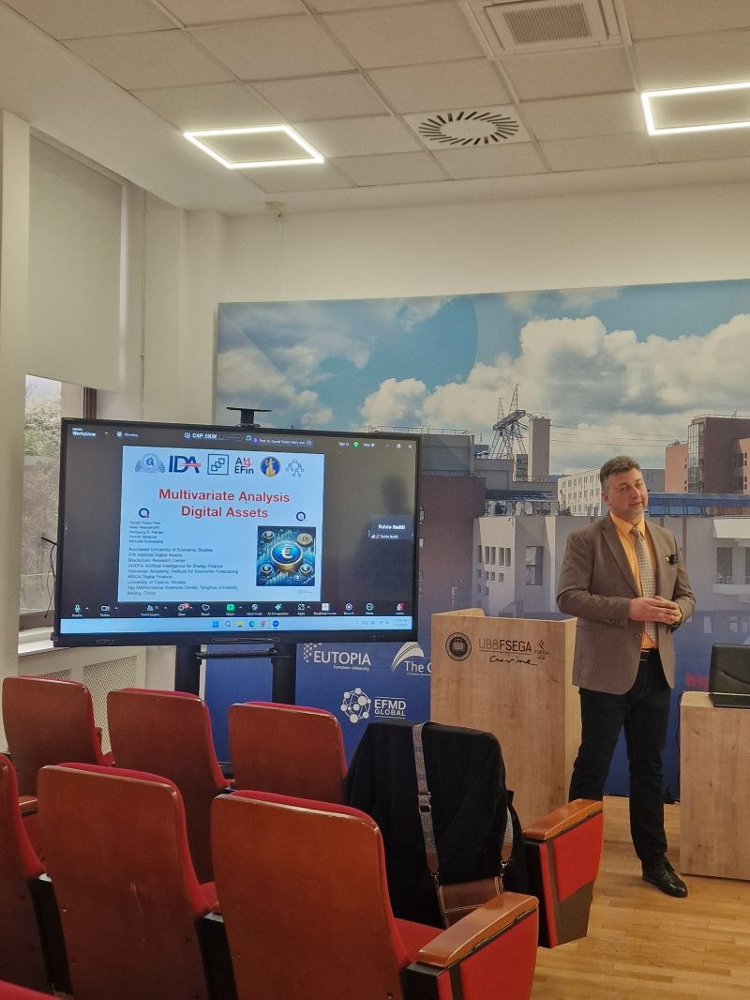
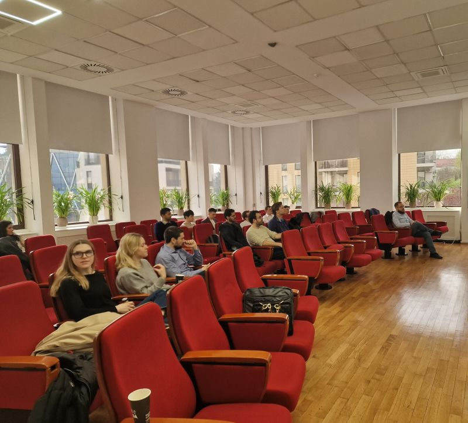
Content truncated in source
🕛 The first day of the conference (March 31st)
hosting the doctoral training course "Foundations of Data Science (4 ECTS) and
Project Management (1 ECTS) at the
(31st of March to April 4th 2025)
UBB FSEGA | Faculty of Economics and Business Administration
Content truncated in source
🕛 The first day of the conference (March 31st)
hosting the doctoral training course "Foundations of Data Science (4 ECTS) and
Project Management (1 ECTS) at the
(31st of March to April 4th 2025)
UBB FSEGA | Faculty of Economics and Business Administration
Content truncated in source
↻ Reposted from MSCA Digital Finance
🕛 The first day of the conference (March 31st)
hosting the doctoral training course "Foundations of Data Science (4 ECTS) and
Project Management (1 ECTS) at the
(31st of March to April 4th 2025)
UBB FSEGA | Faculty of Economics and Business Administration
Content truncated in source
↻ Reposted from MSCA Digital Finance
🙋♂️ Join us for the doctoral training course „Foundations of Data Science” from 31st of March to 4th of April 2025! 💡
🗺️
is hosting the upcoming doctoral training course "Foundations of Data Science (4 ECTS) and Project Management (1 ECTS)
Content truncated in source
💡Looking forward to the third day of MSCA BBU training (April 2nd, 2025) when an Exciting Event Announcement is waiting for you.
🕛 Engaging Talks by Industry Experts:
(General Manager, ABC Incubator),
(Data, Analytics & AI Service Manager
Calin Sahleanu
Maria Irimias
MSCA TRAINING - Data Science @BBU | Digital Finance MSCA , Mon, Mar 31, 2025, 9:00 AM | Meetup
meetup.com
Content truncated in source
Looking forward!💡
Second day of MSCA BBU -April 1st, 2025 at UBB FSEGA | Faculty of Economics and Business Administration
Content truncated in source
I am delighted to present, as Co-coordinator, the planned activities of the Diversity Group (
) at the Round Table "Data
https://lnkd.in/d2xM2yWY
Science against Inequality", part of the SDS Conference 2025 (
).
https://lnkd.in/ddrCD5_r
This session will be a great opportunity to explore how data science can tackle inequality and foster diversity in digital finance. Looking forward to
Our Diversity | Digital Finance MSCA
digital-finance-msca.com
Content truncated in source
Join us for an insightful week 31 March-4th April 2025 at UBB FSEGA | Faculty of Economics and Business Administration
🙋♂️ Join us for the doctoral training course „Foundations of Data Science” from 31st of March to 4th of April 2025! 💡
🗺️
is hosting the upcoming doctoral training course "Foundations of Data Science (4 ECTS) and Project Management (1 ECTS)
Content truncated in source
↻ Reposted from Hanna Kristín Skaftadóttir, Ph.D.
PhD, AI & Automation in Business | University Program Leader of BI & Assistant Professor | Board Member of Hefring Marine and European AI Standards (CEN/CLC/JTC 21)
🙋♂️ Join us for the doctoral training course „Foundations of Data Science” from 31st of March to 4th of April 2025! 💡
🗺️
is hosting the upcoming doctoral training course "Foundations of Data Science (4 ECTS) and Project Management (1 ECTS)
Content truncated in source
↻ Reposted from Hanna Kristín Skaftadóttir, Ph.D.
PhD, AI & Automation in Business | University Program Leader of BI & Assistant Professor | Board Member of Hefring Marine and European AI Standards (CEN/CLC/JTC 21)
Join us for the doctoral training course „Foundations of Data Science” from 31st of March to 4th of April 2025! 💡
👇👇👇👇👇👇👇👇👇👇👇👇👇👇👇👇👇👇👇👇👇👇👇👇👇👇👇👇👇👇👇👇👇
Join us for the doctoral training course „Foundations of Data Science” from 31st of March to 4th of April 2025! 💡
is hosting the upcoming doctoral training course "Foundations of Data Science (4 ECTS) and Project Management (1 ECTS) at
Content truncated in source
↻ Reposted from UBB FSEGA | Faculty of Economics and Business Administration
Yesterday, we had the privilege of hosting Professor
from the University of Illinois Urbana-Champaign for an insightful presentation -
Anil Bera
𝐓𝐞𝐬𝐭𝐢𝐧𝐠 𝐒𝐩𝐚𝐭𝐢𝐚𝐥 𝐑𝐞𝐠𝐫𝐞𝐬𝐬𝐢𝐨𝐧 𝐌𝐨𝐝𝐞𝐥𝐬: 𝐓𝐡𝐞 𝐅𝐢𝐧𝐚𝐥 𝐖𝐨𝐫𝐝. 🌍✨
Content truncated in source
Great presentation Prof.
!
Anil Bera
📜 Today, within the upcoming doctoral training course „Foundations of Data Science” from 31st of March to 4th of April 2025, part of
MSCA Digital
,
Finance
+5
Content truncated in source
📜 Today, within the upcoming doctoral training course „Foundations of Data Science” from 31st of March to 4th of April 2025, part of
MSCA Digital
,
Finance
+5
Content truncated in source
Waiting for you tomorrow for the interesting presentation of Prof.
Anil Bera
.
https://lnkd.in/e5TKKBz
Join us for the doctoral training course „Foundations of Data Science” from 31st of March to 4th of April 2025! 💡
is hosting the upcoming doctoral training course "Foundations of Data Science (4 ECTS) and Project Management (1 ECTS) at
Content truncated in source
Join us for a great
within
UBB FSEGA | Faculty of Economics and Business Administration
Join us for the doctoral training course „Foundations of Data Science” from 31st of March to 4th of April 2025! 💡
is hosting the upcoming doctoral training course "Foundations of Data Science (4 ECTS) and Project Management (1 ECTS) at
Content truncated in source
Join us for the doctoral training course „Foundations of Data Science” from 31st of March to 4th of April 2025! 💡
is hosting the upcoming doctoral training course "Foundations of Data Science (4 ECTS) and Project Management (1 ECTS) at
Content truncated in source